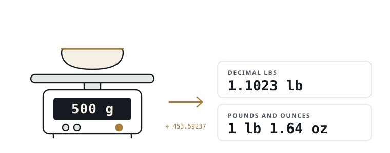

Grams to Lbs (Pounds) Converter
Convert grams to lbs instantly. Decimal pounds, pounds and ounces, and total ounces — all at once, updating as you type.
Quick pick
Decimal lbs
—
Pounds and ounces
—
Total ounces
—
1 pound = 453.59237 grams exactly, by the 1959 International Yard and Pound Agreement.
Popular grams to lbs conversions
The values people look up most, already worked out. Select one to load it into the converter.
What this converter does differently
Four things most grams to lbs converters get wrong or leave out.
Pounds and ounces, not just decimals
Nobody says a baby weighs 7.7162 pounds. Every result also appears as 7 lb 11.46 oz, which is how the weight is actually spoken and recorded.
Troy weight is handled honestly
A troy ounce is 31.1034768 g against 28.349523125 g for a normal ounce. Confusing them misprices gold by 9.71 percent, and this page explains which to use.
You choose the precision
Switch between 2, 4 and 6 decimal places. The rounding is visible and under your control rather than fixed and hidden.
Nothing leaves your browser
Every calculation runs on your own device using the exact factor of 453.59237 grams per pound. No weight you type is sent to a server.
Guides
Converting grams to lbs in the situations where it actually matters.
Baby birth weight
Hospitals record grams, families speak pounds and ounces. Worked examples and a full 1000–5000 g table.
Read the guide →Gold and troy ounces
A troy ounce is 31.1034768 g against 28.349523125 g. Mixing them misprices a sale by 9.71 percent.
Read the guide →Shipping weight
Carriers round up to the next whole pound. Ten grams can cost you an entire pricing tier.
Read the guide →Food labels
Nutrition panels use grams, American recipes use pounds. A 500 g pack is not a 1 lb pack.
Read the guide →To convert grams to lbs, divide the number of grams by 453.59237. That single step is the whole calculation: 500 grams equals 1.1023 pounds, and 1,000 grams equals 2.2046 pounds. One international pound is defined as exactly 453.59237 grams, so the figure never changes and never needs measuring.
How to convert grams to lbs
Divide grams by 453.59237 to get pounds, and multiply pounds by 453.59237 to get grams. Those two formulas cover every conversion in both directions:
pounds = grams ÷ 453.59237
grams = pounds × 453.59237
grams = pounds × 453.59237
The number 453.59237 is exact by definition rather than measured. It was fixed by the International Yard and Pound Agreement of 1959, in which the national standards laboratories of the United States, the United Kingdom, Canada, Australia, New Zealand and South Africa agreed to define one international avoirdupois pound as precisely 453.59237 grams. Before that agreement the American and British pounds differed slightly, which mattered for engineering and trade. NIST Special Publication 811, the United States guide to the metric system, publishes this same value as an exact definition rather than a rounded approximation.
Because the definition is exact, any difference you see between two converters is a rounding choice, not a disagreement about the underlying figure. A converter showing 2.2 lb and one showing 2.204623 lb for 1,000 grams are both correct; they have simply stopped at different decimal places.

How many grams are in a pound?
There are exactly 453.59237 grams in one pound. Working from that single figure gives the fractions people ask for most often:
- 1 pound = 453.59237 grams (usually written as 453.6 g)
- Half a pound = 226.796 grams
- A quarter pound = 113.398 grams
- 100 grams = 0.2205 pounds
- 250 grams = 0.5512 pounds
- 500 grams = 1.1023 pounds
A common assumption is that 500 grams makes half a kilogram and therefore about half a pound. It does not. 500 grams equals 1.1023 pounds, which is slightly more than a whole pound, because a pound is roughly 454 grams rather than 1,000.
Grams to pounds and ounces
To convert grams to pounds and ounces, divide the grams by 453.59237 to get decimal pounds, then multiply everything after the decimal point by 16. Nobody describes a weight as "2.2046 pounds" out loud, and hospital charts, postal counters and kitchen scales all deal in pounds plus ounces instead.
Here is 3,500 grams worked through completely:
3500 ÷ 453.59237 = 7.7162 lb
whole pounds → 7 lb
0.7162 × 16 = 11.46 oz
result → 7 lb 11.46 oz
whole pounds → 7 lb
0.7162 × 16 = 11.46 oz
result → 7 lb 11.46 oz
The reason the second step multiplies by 16 is that one avoirdupois pound contains 16 avoirdupois ounces, with one ounce equal to 28.349523125 grams exactly. The converter at the top of this page performs both steps at once and displays decimal pounds, pounds with ounces, and total ounces together.
Where you actually need to convert grams to lbs
Grams-to-pounds conversions come up most in four situations, and each one has its own trap.
Baby birth weight
Hospitals in most countries record birth weight in grams, while families in the United States and United Kingdom think in pounds and ounces. A baby recorded at 3,500 grams weighs 7 lb 11.46 oz, which is what the grandparents will actually want to hear. Decimal pounds are close to useless in this situation: "7.7162 pounds" means nothing to anyone, while "7 pounds 11 ounces" is immediately understood. Neonatal charts also use grams for tracking daily gain, so parents frequently convert the same figure twice.
Postal and courier weight
Shipping brackets are set in pounds in the United States, but most kitchen and parcel scales sold worldwide read in grams. Carriers charge by rounded-up bracket rather than by exact weight, so a parcel at 460 grams converts to 1.0141 pounds and is charged as a 2 lb parcel by any carrier that rounds up to the next whole pound. Knowing that 453.59237 grams is the line between one bracket and the next is worth real money on repeated shipments.
Gold and jewellery
Precious metals are weighed in troy ounces, not the ordinary ounces used for food and parcels, and confusing the two produces a pricing error of nearly 10 percent. A troy ounce is 31.1034768 grams while an ordinary avoirdupois ounce is 28.349523125 grams.
Food labels and recipes
Nutrition panels list serving sizes in grams while American recipes call for pounds, so the same ingredient often appears in both units in one kitchen. A 250 gram portion is 0.5512 pounds, and a 1,000 gram bag of flour is 2.2046 pounds. Package weights are also frequently rounded on the label itself, so a bag marked 500 g and one marked 1 lb are not the same quantity: the 1 lb bag holds about 46 grams less.
Troy ounces: the conversion mistake that costs money
Gold, silver, platinum and palladium are weighed in troy ounces, and a troy ounce is heavier than the ordinary ounce used for everything else. One troy ounce is 31.1034768 grams, while one avoirdupois ounce is 28.349523125 grams. A troy pound is stranger still: it contains only 12 troy ounces and weighs 373.2417216 grams, not the 453.59237 grams of an ordinary pound.
The size of the error shows clearly on a 100 gram bar:
100 g in troy ounces → 100 ÷ 31.1034768 = 3.215 troy oz
100 g in normal ounces → 100 ÷ 28.349523125 = 3.527 oz
difference → 9.71%
100 g in normal ounces → 100 ÷ 28.349523125 = 3.527 oz
difference → 9.71%
Quoting 3.527 ounces to a buyer who pays per troy ounce overstates the quantity by roughly a tenth. At any realistic gold price that is a serious sum on a single bar, and it is the single most common unit error in small-scale precious metal trading. Scrap and jewellery scales usually read in grams precisely to avoid the ambiguity, which is why converting from grams rather than between ounce types is the safer habit.
Accuracy and rounding
Two decimal places are enough for almost every everyday purpose, and six are needed only for laboratory, trade-approved or precious-metal work. 1,000 grams equals 2.2046 pounds at four decimals and 2.204623 pounds at six; the difference is 0.000023 of a pound, which is about 10 milligrams.
Rounding accounts for essentially every disagreement between two converters. It also explains why a kitchen scale switched between units may show a value one gram away from the calculated figure: consumer scales typically resolve to 1 gram and round internally before display. The converter on this page rounds half away from zero at whichever precision is selected, and lets you choose 2, 4 or 6 decimal places so the rounding is visible rather than hidden.
Grams to lbs conversion table
This table converts common gram values to decimal pounds and to pounds with ounces. Every row is calculated with the exact factor of 453.59237 grams per pound and rounded for display.
| Grams (g) | Pounds (lb) | Pounds & ounces |
|---|---|---|
| 1 g | 0.0022 lb | 0 lb 0.04 oz |
| 5 g | 0.0110 lb | 0 lb 0.18 oz |
| 10 g | 0.0220 lb | 0 lb 0.35 oz |
| 25 g | 0.0551 lb | 0 lb 0.88 oz |
| 50 g | 0.1102 lb | 0 lb 1.76 oz |
| 100 g | 0.2205 lb | 0 lb 3.53 oz |
| 200 g | 0.4409 lb | 0 lb 7.05 oz |
| 250 g | 0.5512 lb | 0 lb 8.82 oz |
| 500 g | 1.1023 lb | 1 lb 1.64 oz |
| 750 g | 1.6535 lb | 1 lb 10.46 oz |
| 1000 g | 2.2046 lb | 2 lb 3.27 oz |
| 1500 g | 3.3069 lb | 3 lb 4.91 oz |
| 2000 g | 4.4092 lb | 4 lb 6.55 oz |
| 2500 g | 5.5116 lb | 5 lb 8.18 oz |
| 5000 g | 11.0231 lb | 11 lb 0.37 oz |
Frequently asked questions
How many pounds is 500 grams?
500 grams is 1.1023 pounds, or 1 pound 1.64 ounces. The calculation divides 500 by 453.59237, the exact number of grams in one pound. A half kilogram is therefore a little over one pound, not half a pound, which is the most frequent mix-up with this particular value.
Is 500 grams half a pound?
No. 500 grams is 1.1023 pounds, which is slightly more than one full pound. Half a pound is 226.796 grams. The confusion comes from 500 grams being half a kilogram, but a kilogram is 2.2046 pounds, so half of it is still more than a single pound.
How many grams are in a pound?
There are exactly 453.59237 grams in one pound. This is a definition rather than a measurement, fixed by the International Yard and Pound Agreement of 1959. For everyday use 453.6 grams is close enough, and many recipes and shipping tables simply round it to 454 grams.
How do I convert grams to pounds and ounces?
Divide the grams by 453.59237 to get decimal pounds, then multiply the part after the decimal point by 16 to get ounces. For 1,000 grams this gives 2.2046 pounds, and 0.2046 multiplied by 16 gives 3.27 ounces, so 1,000 grams is 2 lb 3.27 oz.
Why does my scale show a different number?
Almost always rounding. Consumer scales usually resolve to the nearest 1 gram or 0.1 ounce and round before displaying, so a converted figure can sit a gram either side of the reading. A scale that has not been zeroed, or that is weighing on an uneven surface, will also drift. The conversion factor itself, 453.59237 grams per pound, is exact and never varies.
Is a pound the same in the UK and the US?
Yes. Both countries use the international avoirdupois pound of exactly 453.59237 grams, agreed in 1959. Before then the two differed very slightly. British English spells the metric unit "grammes" as well as "grams", but the spelling makes no difference to the conversion, and the pound is identical in both countries.
What is a metric pound?
A metric pound is exactly 500 grams, and it is an informal unit rather than an official one. It is used conversationally in parts of Europe, such as the German Pfund. A metric pound of 500 grams equals 1.1023 international pounds, so the two are not interchangeable and market prices quoted in each are not comparable.
How do I convert my baby's birth weight from grams?
Divide the grams by 453.59237, then multiply the decimal remainder by 16 to get ounces. A baby recorded at 3,500 grams is 7 lb 11.46 oz, and one recorded at 3,000 grams is 6 lb 9.82 oz. Hospitals record grams because it is the international clinical standard and gives finer resolution for tracking daily weight gain.
Does the conversion change for gold?
The grams-to-pounds conversion does not change, but gold is normally quoted in troy ounces rather than pounds. One troy ounce is 31.1034768 grams against 28.349523125 grams for an ordinary ounce, so 100 grams of gold is 3.215 troy ounces but 3.527 ordinary ounces. Using the wrong one overstates the amount by about 9.71 percent.
How many grams are in a half pound?
A half pound is 226.796 grams, calculated as 453.59237 divided by two. A quarter pound is 113.398 grams, which is where the quarter-pound burger patty gets its name. Butchers and delicatessens commonly round the half pound to 227 grams on labels.
Sources
- NIST Special Publication 811, Guide for the Use of the International System of Units (SI) — exact conversion factors
- NIST Handbook 44, Appendix C — general tables of units of measurement
- BIPM, The International System of Units (SI), 9th edition — definition of the kilogram
- International Yard and Pound Agreement, 1959 — definition of the international avoirdupois pound as 453.59237 g